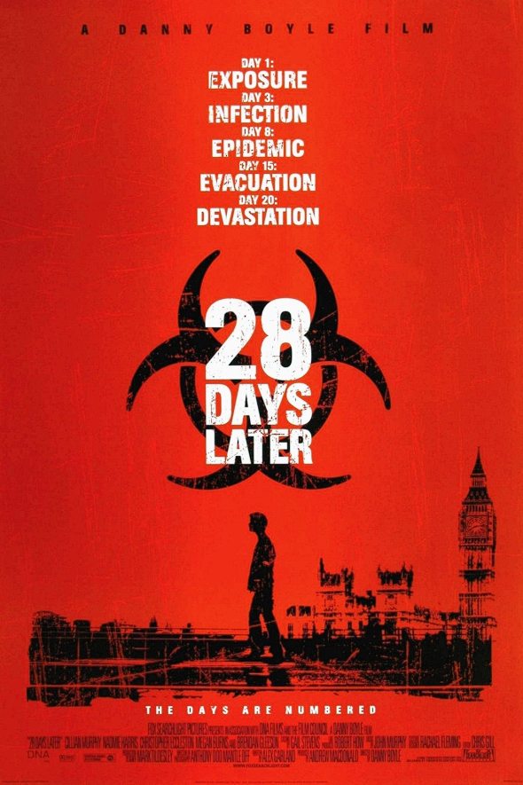

28 DAYS LATER
28 ДНЕЙ СПУСТЯ
Предыстория:
Начну с предыстории. Впервые я этот фильм глянул году, эдак, в 2016. Предположу, что это была середина осени, примерно. Смотрел я его ночью, часа в 2, как помню. Было очень атмосферно. Я помню как словил от фильма дикий вайб, после чего сидел на кухне с кофейком(что для меня не примечательно, ибо кофе я пил редко) и сигареткой, потому что, ранее снова закурил. Наверное пол часа, а может и час, я разбирал и анализировал этот фильм у себя в голове. Впрочем, тогда я уже давно понял, что мне нравится смотреть кино и что после мне нравится его разбирать и анализировать. Но тогда, я впервые ощутил ясное желание с кем-то поделиться своими мыслями. Правда в моменте, так и не нашёл возможности как-то реализовать эту потребность. И теперь, когда я пишу свой обзор сюда, я нахожу довольно символичным то, что именно этот фильм у меня будет первым на обзоре.
Откуда я узнал об этом фильме, понятия не имею, но ни раз к тому моменту я уже слышал о нём, и ни раз мне самому рекомендовали этот фильм, другие любители хоррор жанра. Но первую рекомендацию я получил от какой-то девки, уже и не помню, кто это был, и что нас связывало. То было за год, два или три, до того как я посмотрел этот фильм. Порой я годами могу откладывать просмотр фильма, так что, для меня это нормально.
Оценка и впечатления:
Говоря об оценке фильма, я бы поставил ему 8/10, если смотреть чисто технически и по своим ощущениям. И настоятельно рекомендую его посмотреть всем, т.к. это must watch в жанре ужасов. Если вы любите такое кино, то удивительно, если вы ещё не посмотрели 28 дней спустя. Да и в целом, для кино и поп-культуры, данный фильм - феномен. Как с таким низким бюджетом, оставить такой след? Я полагаю, ответ прост - вложить в фильм душу, которая здесь явно есть + талант режиссёра, который у него также присутствует. Вы его должны знать по таким его фильмам как: «Пляж» (2000), с ДиКаприо, артхаусному фильму «На игле» (1996), «Миллионер из трущоб» (2008), который у нас так любили, годами крутить по телеку, каждые пару месяцев, «127 часов» (2010), ну и разумеется сиквелу «28 недель спустя» (2007). Он не просто хорош, это уже культовый, легендарный фильм, вдохновлённый классикой и сам уже ставший классикой.
Что можно сказать о фильме, в чисто техническом плане? Да, он не дорогой. Да он снят уже 23 года назад, однако атмосфера в фильме присутствует и она не теряет своего очарования и сегодня. Каждый нормальный фильм ужасов - должен быть страшным. И этот фильм действительно напугает вас даже в 2025 и я думаю своей хоррор составляющей фильм не лишится и через десятилетия, именно из-за того, каким образом он был снят. При этом, данный фильм является ещё и триллером и у него это хорошо получается; чувство сапиенса, нагнетания, тревоги в нём присутствует. А так же, есть у фильма какой-то особый шарм, особый вайб, который ты чувствуешь и который тянет тебя возвращаться к нему снова и снова, хотя бы изредка. Особенно, если вы, как и я - любитель эстетики заброшек. Даже полное знание сюжета, не мешает погружению в фильм и не лишает вас удовольствия при повтором просмотре. Я смотрел этот фильм раза 2-3. В последний раз, пересмотрев совсем недавно, я получил почти такое же удовольствие, как и в первый раз, и с удовольствием пересмотрел бы его, ещё несколько раз - в будущем.
Вдохновения и наследие:
С этим вопросом я вышел в сеть «интернет», и нашёл интервью создателей фильма(режиссёра и сценариста), которые говорили о книге «День триффидов» Джона Уиндема (роман, 1951), - Классических зомби-фильмах Джорджа Ромеро, таких как «Ночь живых мертвецов» (1968) и «Рассвет мертвецов» (1978), а так же триллере 90-х «Вспышка» (Outbreak, 1995) и фильме «Омега-мэн» (1971), и даже о научных репортажах, про вирусы Эбола и Марбург в 90-е, и другие британские фильмы, в жанре пост-апокалипсиса «День после» (The Day After, 1983), «Threads» (1984), как источники своего вдохновения. Примечательная вещь, что завязка, где герой просыпается в больнице и обнаруживает, что мир опустел, которую мы так же позже увидим в сериале Ходячие Мертвецы от AMC, отсылает к книге «День триффидов». А так же, на фильм повлияли реальные события, такие как, - печально известное 11 сентября, случившееся за год, до выхода фильма, и которое я застал ещё совсем юным падаваном. Однако все, кто были достаточно взрослыми, что бы застать эту катастрофу в осознанном возрасте, говорят, что тот день оставил сильный психологический эффект. Кажется, даже есть феномен 11 сентября. Был и страх перед биотерроризмом(вспомнить как японская секта пыталась распылять в метро "сибирскую язву"). Вспомнили авторы и вспышку "коровьего бешенства" (BSE) в Великобритании 1990-х и страх перед эпидемиями, такими как атипичная пневмония (SARS, 2002).
Взяв всё выше перечисленное за основу, авторы попытались переосмыслить жанр зомби в кинематографе. И чёрт возьми, им это удалось! Фактически, не смотря на то, что жанр зомби в кино присутствует уже давно, кажется, не менее чем с 40-х, пик популярности закончился в 80-х, так что, в 90-ые это уже был умирающий жанр, который фильмом 28 дней спустя удалось воскресить и привнести туда что-то новое. Примечательный аспект 28 дней спустя, что именно тут впервые(во всяком случае, я не нашёл подтверждений обратного) появились не медленные и гниющие, а быстрые и агрессивные зомби. Авторский подход, сочетающий в себе разные идеи, породил один из самых лучших и культовых фильмов про зомби, чьё наследие живёт с нами и до сих пор. Вспомнить хотя бы такие фильмы как; "Рассвет мертвецов" (2004), "Я легенда" (2007), «Война миров Z» (2013) - который выкрутил идею о быстрых и агрессивных зомби, введённую 28 днями спустя, на максимум. Ну и конечно же сериал - «Ходячие мертвецы» (2010, AMC), который начинается с прямой отсылки к 28 дней спустя. И именно под влиянием 28 дней спустя, Ходячие мертвецы переняли фокус, на реалистичном выживании и взаимоотношении между выжившими, что главный враг человеку, порой сам человек, а не какие-то монстры. Ни у кого также, не возникает вопросов, от кого игра «Left 4 Dead» (2007), берёт своё идейное начало(Что Габеном не отрицается). НУ И КОНЕЧНО ЖЕ!!! Композиция "In the House - In a Heartbeat" Джона Мёрфи, столь простая и столь гениальная, которую миллионы людей добавили в свой личный плейлист, а многие и вовсе слушали, даже не зная о фильме(Я, во всяком случае, точно из таких. Когда я впервые услышал в фильме, уже полюбившуюся мне композицию, - я мягко говоря, был удивлён, разумеется в хорошем смысле). И да, именно этот фильм нехило забустил карьеру Киллиана Мёрфи, который сейчас то супер-известен, но в 2002 именно фильм 28 дней спустя, стал для него важным трамплином в большое кино и к мировой славе. Ещё, фильм популяризировал эстетику пустых улиц, став источником мемов(особенно, во время пандемии китайского вируса) и пародий, правда в основном, в западных интернетах и особенно, в родной фильму Англии.
Техническая разбор:
Фильм снимался, на цифровые камеры Canon XL1. Что с одной стороны, обусловлено низким бюджетом, но с другой, создаёт мрачную атмосферу документалистики, из-за чего всё происходящее на экране, от части воспринимается как фильм, от части как документальная хроника выживших.  Как в последние 5-10 лет, снова стало модно, скупать старые полароиды, на которые получаются очень аутентичные изображения, так и Canon XL1 давая зернистое, «грязное» изображение, делает в сущности, тоже самое. Что вкупе с сюрреалистической картиной пустого Лондона, снятого на рассвете(и это очень красиво), фильтрах и цветокоре, создают ощущение какого-то сна или галлюцинации, в которую мы погружаемся. Всё это усиливает чувство изоляции и конца цивилизации, очень грамотно работает на атмосферу фильма, захватывая ваше воображение.
Как в последние 5-10 лет, снова стало модно, скупать старые полароиды, на которые получаются очень аутентичные изображения, так и Canon XL1 давая зернистое, «грязное» изображение, делает в сущности, тоже самое. Что вкупе с сюрреалистической картиной пустого Лондона, снятого на рассвете(и это очень красиво), фильтрах и цветокоре, создают ощущение какого-то сна или галлюцинации, в которую мы погружаемся. Всё это усиливает чувство изоляции и конца цивилизации, очень грамотно работает на атмосферу фильма, захватывая ваше воображение.
Съёмка с ускоренной частотой кадров и рваный монтаж, будто склеенный любителем, создаёт эффект неожиданности, что заставляет дополнительно напрягаться, ибо никогда не знаешь, в какой момент что-то может выскочить на тебя. Цветовая палитра фильма, это холодные, выцветшие тона, зелёно-синие фильтры, передающие чувства упадка и безысходности. Звук в фильме - отдельный персонаж. Музыка в игре минималистичная, с чётким контрастом, между покоем и опасностью. Звук в фильме не случайно сделан как-будто бы "грязно" или криво, если вы меня понимаете, как может показаться(в первый раз - я пенял на кривые руки кого-то), напротив, он специально местами приглушён, а местами врывается вам в уши так резко, практически как скример. Слишком частая смена планов, рваный ритм в экшн-сценах, создают дополнительное напряжение, заставляя постоянно переживать и чуть ли не кричать в экран "Да покажите же, что с персонажами, живы они, чёрт возьми или их уже убивают!". Сюжетные акценты фильма, смещены от типичного кино-аттракциона 80-х, и приоритете на визуальном страхе, в сторону психологизмов. Вы когда-нибудь представляли, что проснётесь единственным человеком во всём мире? Я знаю, - многие из вас представляли(во всяком случае в детстве), как будут развлекаться и съедят все конфеты в пустых магазинах(или что бы вы там ещё сделали). И тут 28 дней спустя говорит вам прямо в лоб и очень убедительно: "В реальности, вы не будете радоваться, вы обгадитесь от ужаса". И это я так, если бы всё просто. Но если вы проснётесь в мире инфицированных вирусом "Ярость", таких как у Бойла, быстрых, сильных, злых. Это просто RIP. СМЭРТ.
Разбор сюжета:
СПОЙЛЕРЫ!!!
Кратко пройдёмся по сюжету, раз того требует формат рецензий. Дальше будут спойлеры. Если кого-то из вас это напрягает, советую покинуть данный раздел и вернуться к нему, после просмотра фильма.
Фильм начинается с кадров насилия, которые как-будто бы взяты из реальной жизни(и похоже на то). Затем мы видим лабораторию, где над животными проводятся какие-то эксперименты. Вскоре туда врываются "зелёные", борцы за права животных, которые пренебрегают предупреждениями учёного и бездумно выпускают животных, которые заражены синтетическим вирусом "Ярость", передающимся при контакте с жидкостями инфицированных, и за считанные секунды превращающий заражённого в агрессивное, будто бешенством, существо, желающее лишь одного - убивать. Что на себе первой и ощутила альтушка, выпустившая первую обезьяну.
Велокурьер Джим(Киллиан Мёрфи), попавший незадолго до этого в больницу, после того как его сбила машина, пробуждается в больнице совсем один. В халате он бродит по пустой больнице, выходит на улицу, где кругом видны следы мародёрства. Пустует местный парламент. Пустует Букингемский дворец, собор Святого Павла, пустует площадь Пикадилли. Кругом валяются флаеры с предупреждением об эвакуации Лондона и объявлениями о пропаже людей. Разве я ещё не говорил вам, что абсолютно пустой Лондон в лучах рассветного Солнца завораживает?
В какой-то момент Джим оказывается в церкви, и перед нами открывается жуткая сцена, церкви усеянной трупами людей, которые как это часто бывает - решили укрыться в церкви, но нашли там лишь свою смерть. Но мертвы ли они действительно? Скоро Джим понимает, что те из них кто не умерли, обратились в страшных монстров, которые атакуют его. Тогда он и встречает впервые других выживших Селену (Наоми Харрис) и Марка (Ноа Хантли), которые помогают ему спастись и уведя в безопасное место, рассказывают о последних 28 днях, выражая опасения, что данная эпидемия уже уничтожила весь мир. И предупреждая, что инфицированные всегда предпочитают держаться группами. А так же выражают ему соболезнования, утверждая, что все кого он знал, скорее всего, уже мертвы.
После острой реакции Джима на обрушившийся на него шквал страшных новостей, он решает проведать родных, добравшись до их дома, где его самые страшные опасения оправдываются. Тут происходит одна из самых напугавших меня сцен фильма, а поскольку я ещё на этом моменте отвернулся, что бы положить в рот кусочек еды, чего бы там я не ел(возможно курочку), от внезапности я едва не свалился со стула. Дальше хуже, в ходе завязавшегося конфликта, на Марка попала кровь, после чего Селена тут же зарубила своего приятеля с той хладнокровностью и решительностью, которая вызвала у Джима ужас. Здесь мы узнаём что у заражённых всего 10-20 секунд, до того, как они обратятся, поэтому убивать их стоит незамедлительно, будь это хоть ваш друг, брат, сват, любимая девушка или ребёнок. Напоследок Селена пообещала Джиму, что при необходимости, зарубит его так же без раздумий.
Заметив в одном из домов свет, наши герои решают подняться туда, в поисках других выживших, однако их преследует тола мертвецов, что приводит нас к ещё одной жуткой сцене. Чудом спасшись, они находят прибежище в квартире небольшой выжившей семьи, состоящей из отца семейства Фрэнка (Брендан Глисон) и его малолетней дочери Ханны (Меган Бёрнс). Но долго они там не засиживаются, имея проблемы с ресурсами, они решают использовать машину-такси Фрэнка, что бы поехать к военным, чью передачу они поймали по радио, и которые обещали не только выживание, но и ответ на то как победить инфекцию.
Решивши выбрать более короткий путь, они поехали по туннелю, в котором была весьма сюрреалистическая картина езды по развалинам загородившим им путь, и в результате такой опасной езды, случается прокол колеса. Это место изначально показалось мне крайне неподходящим, что бы там застрять, так и вышло. В процессе смены запаски за ними уже следовала толпа бешенных зомби, и то как показаны несущиеся тени по стенам туннеля, действительно жутко. В последний момент, нашим выжившим удаётся уйти.
Прибыв на место, они не обнаруживают там ничего, кроме запустения. В гневе от неудавшегося плана спастись, Фрэнк делает удар ногой, в результате чего, с тела убитого заражённого прямо в глаз ему капает капля крови. Насколько же нелепый конец этого добряка! И далее я представляю, не отсюда ли вдохновлён внезапный сюжетный поворот в фильме Мгла, когда вдруг из ниоткуда возникли военные и убили Фрэнка, сопроводив выживших в свой особняк, в котором рота солдат разместилась.
Удивительно тёплый приём, заканчивается как ожидалось чем-то нехорошим. Возглавляющий их майор Генри Уэст (Кристофер Экклстон) совсем не имеет ответа на инфекцию, кроме как переждать в удобном и защищённом особняке, пока все зомби сами передохнут с голоду. Если их вообще корректно называть зомби, т.к. они не совсем мертвы и это скорее вид бешенства, но раз уж так повелось, то пусть будут - зомби.
Ещё более гениальная идея майора в том, что человечеству нужно возрождать популяцию, и он давно обещал своим обезумившим от жажды плотских утех солдатам - женщин. Поэтому, он решил строить местное мужское государство, в котором ему показалось уместным взять, по сути, в сексуальное рабство нашу загорелую подругу Селену и лоли в лице Ханны. Естественно, Джим всей гениальности майора не понял(хотя, в сложившихся обстоятельствах, определённая, суровая логика, лишённая сантиментов, в его плане всё же есть) и его с ещё одним возмущённым солдатом, заперли и приковали наручниками. В ходе их заключения военный делится с курьером соображениями, что вирус удалось локализовать в Англии, которую наверняка оцепили и держат на карантине, и пока они тухнут здесь, где-то в вашей Омэрике, кушают на завтрак яишенку с сочным беконом, запивают апельсиновым соком и смотрят Симпсонов(наша рота тоже хотела поесть яиц, но они оказались протухшими и не смотря на все старания повара, их есть отказались).
Финал фильма начинается с того, что пленных ведут на расстрел, что бы больше не раскачивали лодку. Один из карателей сомневается в правильности расстрела своего бывшего сослуживца, и в результате их перепалки, Джиму удаётся сбежать и дальше начинается какая-то стелс игра, вроде Tom Clancy’s Splinter Cell, и хотя этот акт поставлен, как по мне - великолепно и очень жутко. Особенно сцена с африканцем, который появился внезапно в окне, после вспышки молнии(его освободил Джим, что бы устроить хаос и получить преимущество). С сюжетной точки зрения, для некоторых делает концовку недостаточно реалистичной и нарушающей общий тон фильма, следуя которому, логично было предположить, что все умрут. Но как по мне, всё сделано красиво и немного надежды в конце не повредило. В самом конце, наши герои подают сигнал SOS, пролетавшему мимо самолёту с другими военными и их замечают. К О Н Е Ц.
К тому же, у фильма есть целых 3 альтернативные концовки, которые вы можете найти на ютубе. Каноническая считается наиболее оптимистичной, другие же, более мрачные.